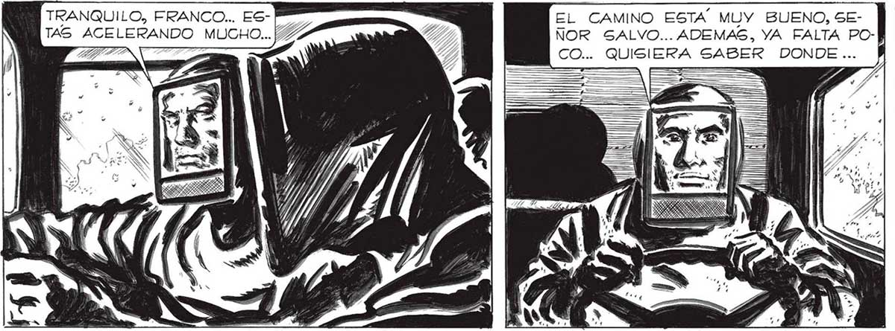

¡PODRÍAN PONER UN POCO DE MÚGICA! ¡YA NOS SABEMOS LAS INSTRUCCIONES DE ¡PENSAR QUE DENTRO DE UN FAR DE HORAS ESTAREMOS LLEGANDO A PERGAMINO,A LA ZONA DE SEGURIDAD! NOSOTROS, LAS SABEMOS, | ELENA, PERO PIENSA QUE HABRA” MUCHOS SOBREVIVIENTES QUE TODAVÍA NO LAS HAN ESCUCHADO. AUNQUE NO DEJO DE... o TRANQUILO, FRANCO... ESTAS ACELERANDO MUCHO Cosmma CREERLO, EN VERDAD. TAN INACABABLE, TAN EXTENSO PARECIA AQUEL INCESANTE CAER DE LOS CcOPOS DE LA NEVADA MORTAL. QUE SE HACIA DIFICIL IMAGINAR QUE PUDIERA HABER ALGÚN LUGAR DONDE NO ESTUVIERAN CAYENDO. PERO, SIN EMBARGO, LA RADIO SEGUIA HABLANDO CON SEGU:RIDAD ABSOLUTA... e ...RECONOCER QUE TIENES MUCHÍSIMA RAZON..¡UN POCO DE MÚSICA, AUNQUE FUERA UNO DE ESOS BOLEROS QUE TANTO TE GUSTAN, NOS VEN:-| DRIA AHORA DE PERLAS! SERIA LA MEJOR SEÑAL DE QUE LA TIERRA VUELVE A SER LA TIERRA... EL CAMINO ESTA MUY BUENO, SENOR SALVO... ADEMAS, YA FALTA POCO... QUISIERA SABER DONDE ... v : > sa , w ? E. PAIGAJ e e E BA TRASMITIENDO LAS Solo muy DE TARDE EN TAR DE ENCONTRABAMOS ALGÚN CAMION O ALGÚN AUTO DETENIDO EN EL CAMINO; FRANCO PUDO MANTENER EL PRO: MEDIO DE LA VELOCIDAD ALREDEDOR DE LOS SETENTA KILOMETROS POR HORA... y De” da $e.” A q 4 e. di > 1 A Ea ol . a. PU? Si 7 > ADA u 4 eo E ) .) l4 Y a 5 y * | PARA BOLIVIA LAS ZONAS DE SEGURIDAD QUE HEMOS CONSEGUIDO ESTABLECER SON: PARA LA PAZ, COCHABAMBA,ORURO Y NORTE DE POTOSÍ, EL TRIANGULO COMPRENDIDO ENTRE TARATA, SACABA Y TAPACAR!... ñ 4 E ES - o xs Yo» E. Y so. « YI *s ri "a E Cn E, MONOTONO Y VELADO EN PARTE _:_2—77 POR LA INACABABLE NEVADA, GEGUIA HUYEN: _s ”+7' DO A NUESTROS LADOS. LA RADIO CONTINUA-__—_" 7. INSTRUCCIONES... - A -_—— e Y ATRAS FUERON QUEDANDO CASERIOS, ALGÚN | PUENTE, OTROS CAMINOS. MIRE EL RELOJ, Y COMPROBE ATURDIDO QUE LLEVABAMOS MAS DE DOS HORAS DE MARCHA... ESTABAMOS YA MUY LEJOS DE BUENOS AIRES... 335
